巨大な大仏さんがおわす寺、アントン郊外の
ワットムアン。
以前訪れた時はまだ大仏さんは未完成だったが、見事完成していた。
前回のレポートは
こちら
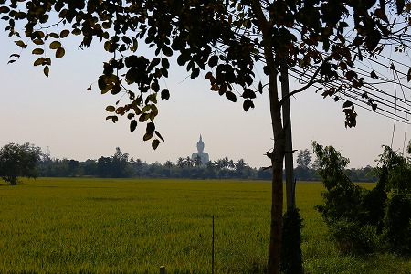
遥か彼方から巨大な姿が見える。
アントンはバンコクの北バスターミナルからミニバスで約2時間程。
アントンのバスターミナルからソンテウ(乗合タクシーのようなもの）で十数分。
つまりバンコクから充分日帰り圏内の寺なのだ。
ワットパーラックローイも行ったし、ワットパイロンウアも行ったし、ワットプートウドムも行ったし…どっかないかなあ〜、とお嘆きの我儘な貴兄にお勧めのスポットなのだ。
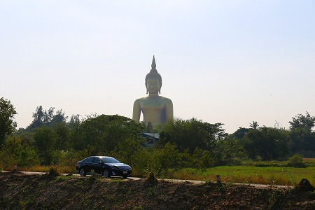
前回は全身に足場が掛かっており、塗装もされていなかった。
そもそも頭部が半分しか完成してなかった状態だったが、今や立派な佛陀様となって金色に輝いている。
うむうむ。立派になられて…（涙）。
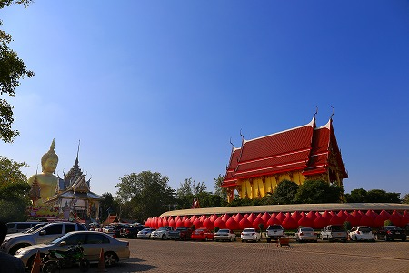
そんなこんなでお寺に到着。右が本堂。
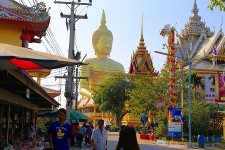
本堂の脇には土産屋などがあり、以前にも増して賑やかだった。
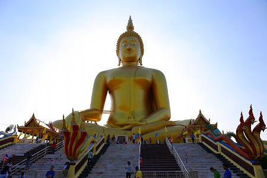
で、まずは完成した大仏さんにご挨拶。
ここに至るまで、視界の隅っこにチラッチラッと見えるカラフルなコンクリ像は後程たっぷり堪能するとして、今は敢えて大仏さんに集中しよう。
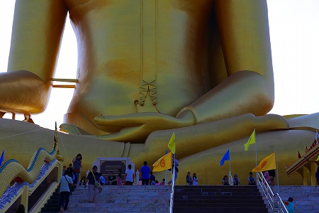
…にしても大きい。
手前にいる人間が蟻のようだ。
公称では
高さ93ｍ幅62ｍ。多分高さは基壇部込みだと思う。
とはいえこのサイズ感は壮絶だ。
なんでもタイ最大の仏像だとか。
というか坐像で93ｍ（正味70ｍちょいかな）だったら
立ち上がったら世界最大の仏像かも知れないですね。
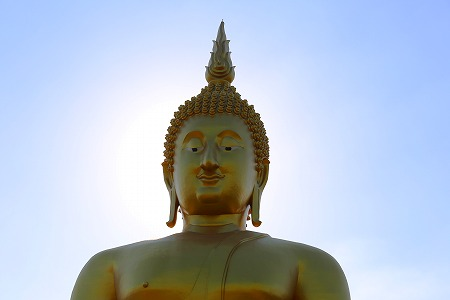
御尊顔はややキュート系。
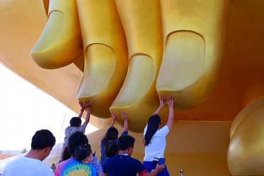
見れば長い列が出来ていた。
大仏さんの垂らした右手の指を触っているのだ。
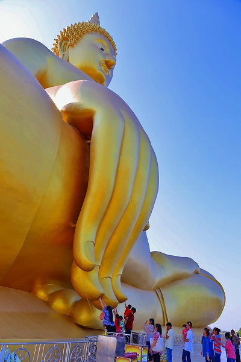
みんな背伸びして触っている。
子供や老人は周りの人に抱えられながら仏縁を得ようと必死に大仏さんの指先を触っていた。
大仏の一部にこうしてダイレクトに触れられるのは素晴らしい事だと思う。
ただ単に巨大さをアピールするだけの大仏よりも遥かに身近に感じられるし、何より世界最大級の大仏の指に触れるなんてギミックとして面白いじゃない。
人間のスケール感と世界最大級の仏像のスケール感を行き来することで、この大仏さんは人々の心に寄り添っていけるのではないだろうか。
そんなことを考えながら人々の列をぼんやりと眺めていた。
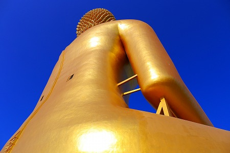
後姿。
中には入れないが、背中に窓がついていた。
メンテ用の窓だろうが、入りたかったなあ。
あと右手は結構補強してあるんだなあ、と。
さて。
ここからが本題です。
大仏さんの前にはこのようにコンクリ像が大量に並んでいる。
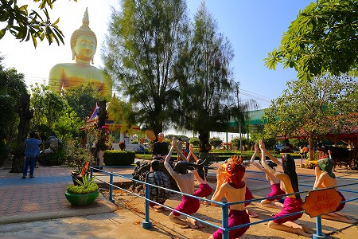
言わずと知れた
コンクリ立体地獄である。
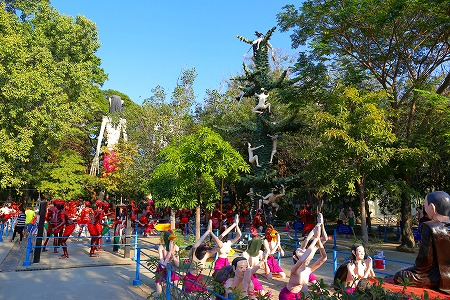
タイ屈指の規模を誇る立体地獄といえよう。
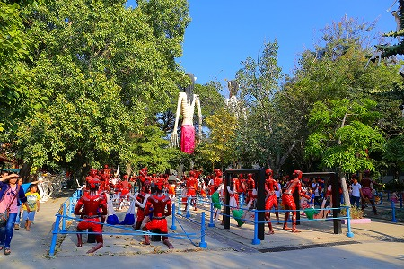
しかもちゃあんと水色の柵の中に納まっているところが何だかムエタイのリングっぽくて面白い。
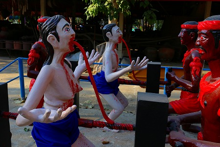
ココの地獄は結構オリジナルの責め苦が見られて興味深い。
コレはドリルでお腹をグイグイ突き刺す地獄。
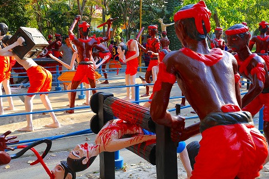
パスタマシーンで引き伸ばす地獄（コレは他の地獄でも見たことある）。
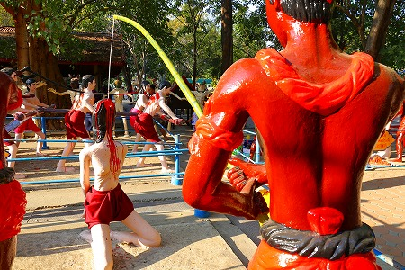
一本釣り（釣られ、か）地獄
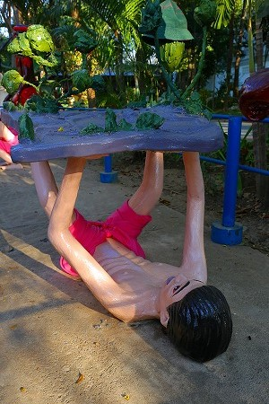
大地のようなものを支えなければならない地獄。地球の命運に責任を負わせられるとかそういう地獄なのだろうか？
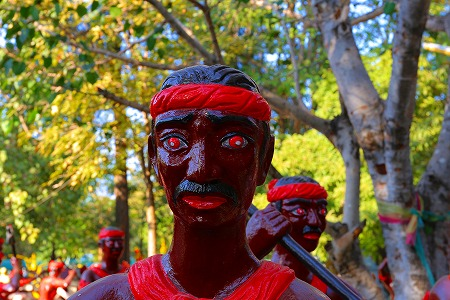
前回訪問時には責め苦を受ける亡者と責め苦をする獄卒、どちらも同じ肌色だったのだが、
獄卒だけ肌の色が褐色に塗り直されていた。
これは「亡者と獄卒は違う立場にある」、という事をビジュアル的に示そうとしたためであろう。
ちなみにタイの立体地獄ではほとんど獄卒は人間（というか亡者）と違う皮膚の色をしている。
中には青とか緑色の獄卒までいて、明らかに
「人間とは違う何か」であるという表現方法をとっている。
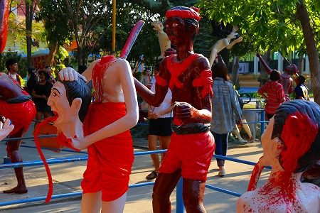
にしても獄卒の皆さんもお仕事とはいえご苦労様です。
日々首を切ったり…
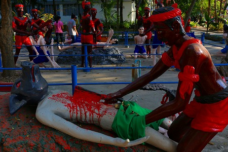
腹を裂いたり。
やられる方は地獄そのものだが、やる方も悪夢ですな。
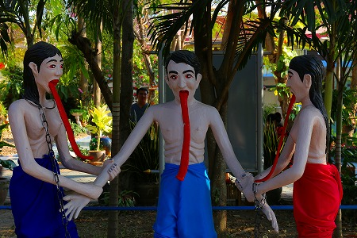
「私とこの娘、どっちが好きなのっ？」
…なんて現世では極楽状態なはずなのだが、何だか楽しそうには見えないなあ。
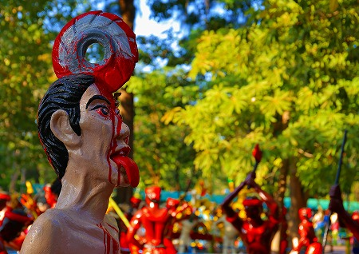
スピニングホイールが頭にヒットしちゃってますね。
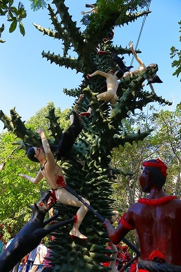
タイの地獄といえばお約束、なトゲトゲの木。
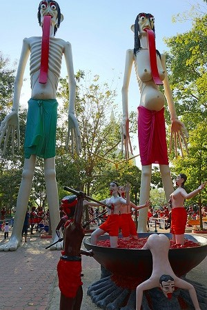
そして巨大な男女の像。
基本スペックはもとより
残虐さとユーモアを併せ持った素晴らしい立体地獄だ。
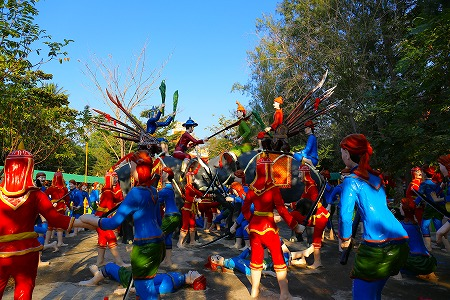
このワットムアンの最大の特徴は立体地獄のみならず歴史的シーンや寓話などもコンクリ像で表現されている点。
↑はビルマ族との戦い。
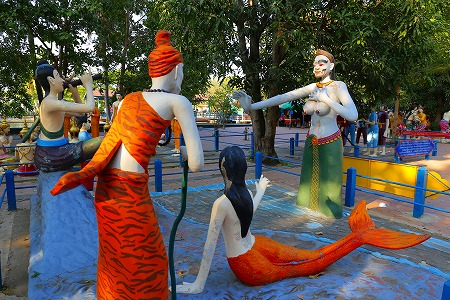
このヒゲオッパイの人もあちこちで見かける。
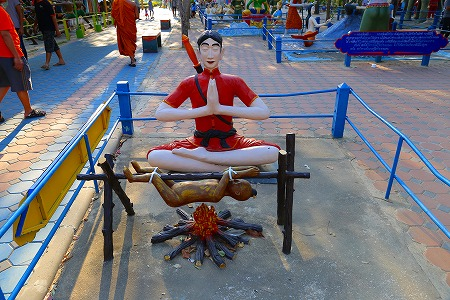
子供の丸焼きはチョット…
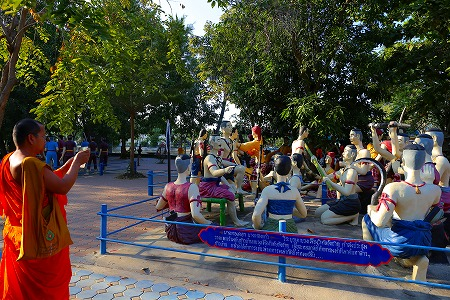
そんなシーンの連続に他所から来た
お坊さんも苦笑い。
デジカメでバシバシ撮影してました。
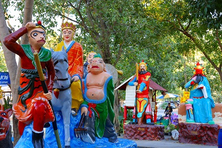
西遊記はじめ道教系のカミサマもたんまりいました。
パトロールしがいのある寺だった。
（ちなみに帰りの足が全くなくて、ヒッチハイクで帰りました…）
次はミャンマーだ！